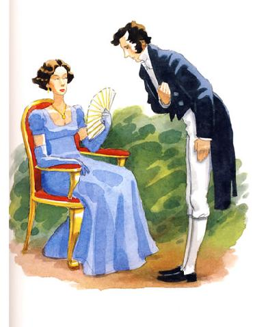

Pride and Prejudice
Chapter 1
It is a truth universally acknowledged, that a single man in possession of a good fortune, must be in want of a wife.
However little known the feelings or views of such a man may be on his first entering a neighbourhood, this truth is so well fixed in the minds of the surrounding families, that he is considered the rightful property of some one or other of their daughters.
"My dear Mr. Bennet," said his lady to him one day, "have you heard that Netherfield Park is let at last?"
Mr. Bennet replied that he had not.
"But it is," returned she; "for Mrs. Long has just been here, and she told me all about it."
Mr. Bennet made no answer.
"Do you not want to know who has taken it?" cried his wife impatiently.
"You want to tell me, and I have no objection to hearing it."
This was invitation enough.
"Why, my dear, you must know, Mrs. Long says that Netherfield is taken by a young man of large fortune from the north of England; that he came down on Monday in a chaise and four to see the place, and was so much delighted with it, that he agreed with Mr. Morris immediately; that he is to take possession before Michaelmas, and some of his servants are to be in the house by the end of next week."
"What is his name?"
"Bingley."
"Is he married or single?"
"Oh! Single, my dear, to be sure! A single man of large fortune; four or five thousand a year. What a fine thing for our girls!"
"How so? How can it affect them?"
"My dear Mr. Bennet," replied his wife, "how can you be so tiresome! You must know that I am thinking of his marrying one of them."
"Is that his design in settling here?"
"Design! Nonsense, how can you talk so! But it is very likely that he may fall in love with one of them, and therefore you must visit him as soon as he comes."
"I see no occasion for that. You and the girls may go, or you may send them by themselves, which perhaps will be still better, for as you are as handsome as any of them, Mr. Bingley may like you the best of the party."
"My dear, you flatter me. I certainly have had my share of beauty, but I do not pretend to be anything extraordinary now. When a woman has five grown-up daughters, she ought to give over thinking of her own beauty."
"In such cases, a woman has not often much beauty to think of."
"But, my dear, you must indeed go and see Mr. Bingley when he comes into the neighbourhood."
"It is more than I engage for, I assure you."
"But consider your daughters. Only think what an establishment it would be for one of them. Sir William and Lady Lucas are determined to go, merely on that account, for in general, you know, they visit no newcomers. Indeed you must go, for it will be impossible for us to visit him if you do not."
"You are over-scrupulous, surely. I dare say Mr. Bingley will be very glad to see you; and I will send a few lines by you to assure him of my hearty consent to his marrying whichever he chooses of the girls; though I must throw in a good word for my little Lizzy."
"I desire you will do no such thing. Lizzy is not a bit better than the others; and I am sure she is not half so handsome as Jane, nor half so good-humoured as Lydia. But you are always giving her the preference."
"They have none of them much to recommend them," replied he; "they are all silly and ignorant like other girls; but Lizzy has something more of quickness than her sisters."
"Mr. Bennet, how can you abuse your own children in such a way? You take delight in vexing me. You have no compassion for my poor nerves."
"You mistake me, my dear. I have a high respect for your nerves. They are my old friends. I have heard you mention them with consideration these last twenty years at least."
"Ah, you do not know what I suffer."
"But I hope you will get over it, and live to see many young men of four thousand a year come into the neighbourhood."
"It will be no use to us, if twenty such should come, since you will not visit them."
"Depend upon it, my dear, that when there are twenty, I will visit them all."
Mr. Bennet was so odd a mixture of quick parts, sarcastic humour, reserve, and caprice, that the experience of three-and-twenty years had been insufficient to make his wife understand his character. Her mind was less difficult to develop. She was a woman of mean understanding, little information, and uncertain temper. When she was discontented, she fancied herself nervous. The business of her life was to get her daughters married; its solace was visiting and news.
Chapter 2
Mr. Bennet was among the earliest of those who waited on Mr. Bingley. He had always intended to visit him, though to the last always assuring his wife that he should not go; and till the evening after the visit was paid she had no knowledge of it. It was then disclosed in the following manner. Observing his second daughter employed in trimming a hat, he suddenly addressed her with:
"I hope Mr. Bingley will like it, Lizzy."
"We are not in a way to know what Mr. Bingley likes," said her mother resentfully, "since we are not to visit."
"But you forget, mamma," said Elizabeth, "that we shall meet him at the assemblies, and that Mrs. Long promised to introduce him."
"I do not believe Mrs. Long will do any such thing. She has two nieces of her own. She is a selfish, hypocritical woman, and I have no opinion of her."
"No more have I," said Mr. Bennet; "and I am glad to find that you do not depend on her serving you."
Mrs. Bennet deigned not to make any reply, but, unable to contain herself, began scolding one of her daughters.
"Don't keep coughing so, Kitty, for Heaven's sake! Have a little compassion on my nerves. You tear them to pieces."
"Kitty has no discretion in her coughs," said her father; "she times them ill."
"I do not cough for my own amusement," replied Kitty fretfully. "When is your next ball to be, Lizzy?"
"To-morrow fortnight."
"Aye, so it is," cried her mother, "and Mrs. Long does not come back till the day before; so it will be impossible for her to introduce him, for she will not know him herself."
"Then, my dear, you may have the advantage of your friend, and introduce Mr. Bingley to her."
"Impossible, Mr. Bennet, impossible, when I am not acquainted with him myself; how can you be so teasing?"
"I honour your circumspection. A fortnight's acquaintance is certainly very little. One cannot know what a man really is by the end of a fortnight. But if we do not venture somebody else will; and after all, Mrs. Long and her daughters must stand their chance; and, therefore, as she will think it an act of kindness, if you decline the office, I will take it on myself."
The girls stared at their father. Mrs. Bennet said only, "Nonsense, nonsense!"
"What can be the meaning of that emphatic exclamation?" cried he. "Do you consider the forms of introduction, and the stress that is laid on them, as nonsense? I cannot quite agree with you there. What say you, Mary? For you are a young lady of deep reflection, I know, and read great books and make extracts."
Mary wished to say something sensible, but knew not how.
"While Mary is adjusting her ideas," he continued, "let us return to Mr. Bingley."
"I am sick of Mr. Bingley," cried his wife.
"I am sorry to hear that; but why did not you tell me that before? If I had known as much this morning I certainly would not have called on him. It is very unlucky; but as I have actually paid the visit, we cannot escape the acquaintance now."
The astonishment of the ladies was just what he wished; that of Mrs. Bennet perhaps surpassing the rest; though, when the first tumult of joy was over, she began to declare that it was what she had expected all the while.
"How good it was in you, my dear Mr. Bennet! But I knew I should persuade you at last. I was sure you loved your girls too well to neglect such an acquaintance. Well, how pleased I am! and it is such a good joke, too, that you should have gone this morning and never said a word about it till now."
"Now, Kitty, you may cough as much as you choose," said Mr. Bennet; and, as he spoke, he left the room, fatigued with the raptures of his wife.
"What an excellent father you have, girls!" said she, when the door was shut. "I do not know how you will ever make him amends for his kindness; or me, either, for that matter. At our time of life it is not so pleasant, I can tell you, to be making new acquaintances every day; but for your sakes, we would do anything. Lydia, my love, though you are the youngest, I dare say Mr. Bingley will dance with you at the next ball."
"Oh!" said Lydia stoutly, "I am not afraid; for though I am the youngest, I'm the tallest."
The rest of the evening was spent in conjecturing how soon he would return Mr. Bennet's visit, and determining when they should ask him to dinner.
Chapter 3
Not all that Mrs. Bennet, however, with the assistance of her five daughters, could ask on the subject, was sufficient to draw from her husband any satisfactory description of Mr. Bingley. They attacked him in various ways—with barefaced questions, ingenious suppositions, and distant surmises; but he eluded the skill of them all, and they were at last obliged to accept the second-hand intelligence of their neighbour, Lady Lucas. Her report was highly favourable. Sir William had been delighted with him. He was quite young, wonderfully handsome, extremely agreeable, and, to crown the whole, he meant to be at the next assembly with a large party. Nothing could be more delightful! To be fond of dancing was a certain step towards falling in love; and very lively hopes of Mr. Bingley's heart were entertained.
"If I can but see one of my daughters happily settled at Netherfield," said Mrs. Bennet to her husband, "and all the others equally well married, I shall have nothing to wish for."
In a few days Mr. Bingley returned Mr. Bennet's visit, and sat about ten minutes with him in his library. He had entertained hopes of being admitted to a sight of the young ladies, of whose beauty he had heard much; but he saw only the father. The ladies were somewhat more fortunate, for they had the advantage of ascertaining from an upper window that he wore a blue coat, and rode a black horse.
An invitation to dinner was soon afterwards dispatched; and already had Mrs. Bennet planned the courses that were to do credit to her housekeeping, when an answer arrived which deferred it all. Mr. Bingley was obliged to be in town the following day, and, consequently, unable to accept the honour of their invitation, etc. Mrs. Bennet was quite disconcerted. She could not imagine what business he could have in town so soon after his arrival in Hertfordshire; and she began to fear that he might be always flying about from one place to another, and never settled at Netherfield as he ought to be. Lady Lucas quieted her fears a little by starting the idea of his being gone to London only to get a large party for the ball; and a report soon followed that Mr. Bingley was to bring twelve ladies and seven gentlemen with him to the assembly. The girls grieved over such a number of ladies, but were comforted the day before the ball by hearing, that instead of twelve he brought only six with him from London—his five sisters and a cousin. And when the party entered the assembly room it consisted of only five altogether—Mr. Bingley, his two sisters, the husband of the eldest, and another young man.
Mr. Bingley was good-looking and gentlemanlike; he had a pleasant countenance, and easy, unaffected manners. His sisters were fine women, with an air of decided fashion. His brother-in-law, Mr. Hurst, merely looked the gentleman; but his friend Mr. Darcy soon drew the attention of the room by his fine, tall person, handsome features, noble mien, and the report which was in general circulation within five minutes after his entrance, of his having ten thousand a year. The gentlemen pronounced him to be a fine figure of a man, the ladies declared he was much handsomer than Mr. Bingley, and he was looked at with great admiration for about half the evening, till his manners gave a disgust which turned the tide of his popularity; for he was discovered to be proud; to be above his company, and above being pleased; and not all his large estate in Derbyshire could then save him from having a most forbidding, disagreeable countenance, and being unworthy to be compared with his friend.
Mr. Bingley had soon made himself acquainted with all the principal people in the room; he was lively and unreserved, danced every dance, was angry that the ball closed so early, and talked of giving one himself at Netherfield. Such amiable qualities must speak for themselves. What a contrast between him and his friend! Mr. Darcy danced only once with Mrs. Hurst and once with Miss Bingley, declined being introduced to any other lady, and spent the rest of the evening in walking about the room, speaking occasionally to one of his own party. His character was decided. He was the proudest, most disagreeable man in the world, and everybody hoped that he would never come there again. Amongst the most violent against him was Mrs. Bennet, whose dislike of his general behaviour was sharpened into particular resentment by his having slighted one of her daughters.
Elizabeth Bennet had been obliged, by the scarcity of gentlemen, to sit down for two dances; and during part of that time, Mr. Darcy had been standing near enough for her to hear a conversation between him and Mr. Bingley, who came from the dance for a few minutes, to press his friend to join it.
"Come, Darcy," said he, "I must have you dance. I hate to see you standing about by yourself in this stupid manner. You had much better dance."
"I certainly shall not. You know how I detest it, unless I am particularly acquainted with my partner. At such an assembly as this it would be insupportable. Your sisters are engaged, and there is not another woman in the room whom it would not be a punishment to me to stand up with."
"I would not be so fastidious as you are," cried Mr. Bingley, "for a kingdom! Upon my honour, I never met with so many pleasant girls in my life as I have this evening; and there are several of them you see uncommonly pretty."
"You are dancing with the only handsome girl in the room," said Mr. Darcy, looking at the eldest Miss Bennet.
"Oh! She is the most beautiful creature I ever beheld! But there is one of her sisters sitting down just behind you, who is very pretty, and I dare say very agreeable. Do let me ask my partner to introduce you."
"Which do you mean?" and turning round he looked for a moment at Elizabeth, till catching her eye, he withdrew his own and coldly said: "She is tolerable, but not handsome enough to tempt me; I am in no humour at present to give consequence to young ladies who are slighted by other men. You had better return to your partner and enjoy her smiles, for you are wasting your time with me."
Mr. Bingley followed his advice. Mr. Darcy walked off; and Elizabeth remained with no very cordial feelings toward him. She told the story, however, with great spirit among her friends; for she had a lively, playful disposition, which delighted in anything ridiculous.
The evening altogether passed off pleasantly to the whole family. Mrs. Bennet had seen her eldest daughter much admired by the Netherfield party. Mr. Bingley had danced with her twice, and she had been distinguished by his sisters. Jane was as much gratified by this as her mother could be, though in a quieter way. Elizabeth felt Jane's pleasure. Mary had heard herself mentioned to Miss Bingley as the most accomplished girl in the neighbourhood; and Catherine and Lydia had been fortunate enough never to be without partners, which was all that they had yet learnt to care for at a ball. They returned, therefore, in good spirits to Longbourn, the village where they lived, and of which they were the principal inhabitants. They found Mr. Bennet still up. With a book he was regardless of time; and on the present occasion he had a good deal of curiosity as to the event of an evening which had raised such splendid expectations. He had rather hoped that his wife's views on the stranger would be disappointed; but he soon found out that he had a different story to hear.
"Oh! my dear Mr. Bennet," as she entered the room, "we have had a most delightful evening, a most excellent ball. I wish you had been there. Jane was so admired, nothing could be like it. Everybody said how well she looked; and Mr. Bingley thought her quite beautiful, and danced with her twice! Only think of that, my dear; he actually danced with her twice! and she was the only creature in the room that he asked a second time. First of all, he asked Miss Lucas. I was so vexed to see him stand up with her! But, however, he did not admire her at all; indeed, nobody can, you know; and he seemed quite struck with Jane as she was going down the dance. So he inquired who she was, and got introduced, and asked her for the two next. Then the two third he danced with Miss King, and the two fourth with Maria Lucas, and the two fifth with Jane again, and the two sixth with Lizzy, and the Boulanger—"
"If he had had any compassion for me," cried her husband impatiently, "he would not have danced half so much! For God's sake, say no more of his partners. Oh that he had sprained his ankle in the first dance!"
"Oh! my dear, I am quite delighted with him. He is so excessively handsome! And his sisters are charming women. I never in my life saw anything more elegant than their dresses. I dare say the lace upon Mrs. Hurst's gown—"
Here she was interrupted again. Mr. Bennet protested against any description of finery. She was therefore obliged to seek another branch of the subject, and related, with much bitterness of spirit and some exaggeration, the shocking rudeness of Mr. Darcy.
"But I can assure you," she added, "that Lizzy does not lose much by not suiting his fancy; for he is a most disagreeable, horrid man, not at all worth pleasing. So high and so conceited that there was no enduring him! He walked here, and he walked there, fancying himself so very great! Not handsome enough to dance with! I wish you had been there, my dear, to have given him one of your set-downs. I quite detest the man."
Chapter 4
When Jane and Elizabeth were alone, the former, who had been cautious in her praise of Mr. Bingley before, expressed to her sister just how very much she admired him.
"He is just what a young man ought to be," said she, "sensible, good-humoured, lively; and I never saw such happy manners!—so much ease, with such perfect good breeding!"
"He is also handsome," replied Elizabeth, "which a young man ought likewise to be, if he possibly can. His character is thereby complete."
"I was very much flattered by his asking me to dance a second time. I did not expect such a compliment."
"Did not you? I did for you. But that is one great difference between us. Compliments always take you by surprise, and me never. What could be more natural than his asking you again? He could not help seeing that you were about five times as pretty as every other woman in the room. No thanks to his gallantry for that. Well, he certainly is very agreeable, and I give you leave to like him. You have liked many a stupider person."
"Dear Lizzy!"
"Oh! you are a great deal too apt, you know, to like people in general. You never see a fault in anybody. All the world are good and agreeable in your eyes. I never heard you speak ill of a human being in your life."
"I would not wish to be hasty in censuring anyone; but I always speak what I think."
"I know you do; and it is that which makes the wonder. With your good sense, to be so honestly blind to the follies and nonsense of others! Affectation of candour is common enough—one meets with it everywhere. But to be candid without ostentation or design—to take the good of everybody's character and make it still better, and say nothing of the bad—belongs to you alone. And so you like this man's sisters, too, do you? Their manners are not equal to his."
"Certainly not—at first. But they are very pleasing women when you converse with them. Miss Bingley is to live with her brother, and keep his house; and I am much mistaken if we shall not find a very charming neighbour in her."
Elizabeth listened in silence, but was not convinced; their behaviour at the assembly had not been calculated to please in general; and with more quickness of observation and less pliancy of temper than her sister, and with a judgement too unassailed by any attention to herself, she was very little disposed to approve them. They were in fact very fine ladies; not deficient in good humour when they were pleased, nor in the power of making themselves agreeable when they chose it, but proud and conceited. They were rather handsome, had been educated in one of the first private seminaries in town, had a fortune of twenty thousand pounds, were in the habit of spending more than they ought, and of associating with people of rank, and were therefore in every respect entitled to think well of themselves, and meanly of others. They were of a respectable family in the north of England; a circumstance more deeply impressed on their memories than that their brother's fortune and their own had been acquired by trade.
Mr. Bingley inherited property to the amount of nearly a hundred thousand pounds from his father, who had intended to purchase an estate, but did not live to do it. Mr. Bingley intended it likewise, and sometimes made choice of his county; but as he was now provided with a good house and the liberty of a manor, it was doubtful to many of those who best knew the easiness of his temper, whether he might not spend the remainder of his days at Netherfield, and leave the next generation to purchase.
His sisters were anxious for his having an estate of his own; but, though he was now only established as a tenant, Miss Bingley was by no means unwilling to preside at his table—nor was Mrs. Hurst, who had married a man of more fashion than fortune, less disposed to consider his house as her home when it suited her. Mr. Bingley had not been of age two years, when he was tempted by an accidental recommendation to look at Netherfield House. He did look at it, and into it for half-an-hour—was pleased with the situation and the principal rooms, satisfied with what the owner said in its praise, and took it immediately.
Between him and Darcy there was a very steady friendship, in spite of great opposition of character. Bingley was endeared to Darcy by the easiness, openness, and ductility of his temper, though no disposition could offer a greater contrast to his own, and though with his own he never appeared dissatisfied. On the strength of Darcy's regard, Bingley had the firmest reliance, and of his judgement the highest opinion. In understanding, Darcy was the superior. Bingley was by no means deficient, but Darcy was clever. He was at the same time haughty, reserved, and fastidious, and his manners, though well-bred, were not inviting. In that respect his friend had greatly the advantage. Bingley was sure of being liked wherever he appeared, Darcy was continually giving offense.
The manner in which they spoke of the Meryton assembly was sufficiently characteristic. Bingley had never met with more pleasant people or prettier girls in his life; everybody had been most kind and attentive to him; there had been no formality, no stiffness; he had soon felt acquainted with all the room; and, as to Miss Bennet, he could not conceive an angel more beautiful. Darcy, on the contrary, had seen a collection of people in whom there was little beauty and no fashion, for none of whom he had felt the smallest interest, and from none received either attention or pleasure. Miss Bennet he acknowledged to be pretty, but she smiled too much.
Mrs. Hurst and her sister allowed it to be so—but still they admired her and liked her, and pronounced her to be a sweet girl, and one whom they would not object to know more of. Miss Bennet was therefore established as a sweet girl, and their brother felt authorized by such commendation to think of her as he chose.
Chapter 5
Within a short walk of Longbourn lived a family with whom the Bennets were particularly intimate. Sir William Lucas had been formerly in trade in Meryton, where he had made a tolerable fortune, and risen to the honour of knighthood by an address to the king during his mayoralty. The distinction had perhaps been felt too strongly. It had given him a disgust to his business, and to his residence in a small market town; and, in quitting them both, he had removed with his family to a house about a mile from Meryton, denominated from that period Lucas Lodge, where he could think with pleasure of his own importance, and, unshackled by business, occupy himself solely in being civil to all the world. For, though elated by his rank, it did not render him supercilious; on the contrary, he was all attention to everybody. By nature inoffensive, friendly, and obliging, his presentation at St. James's had made him courteous.
Lady Lucas was a very good kind of woman, not too clever to be a valuable neighbour to Mrs. Bennet. They had several children. The eldest of them, a sensible, intelligent young woman, about twenty-seven, was Elizabeth's intimate friend.
That the Miss Lucases and the Miss Bennets should meet to talk over a ball was absolutely necessary; and the morning after the assembly brought the former to Longbourn to hear and to communicate.
"You began the evening well, Charlotte," said Mrs. Bennet with civil self-command to Miss Lucas. "You were Mr. Bingley's first choice."
"Yes; but he seemed to like his second better."
"Oh! you mean Jane, I suppose, because he danced with her twice. To be sure that did seem as if he admired her—indeed I rather believe he did—I heard something about it—but I hardly know what—something about Mr. Robinson."
"Perhaps you mean what I overheard between him and Mr. Robinson; did not I mention it to you? Mr. Robinson's asking him how he liked our Meryton assemblies, and whether he did not think there were a great many pretty women in the room, and which he thought the prettiest? and his answering immediately to the last question: 'Oh! the eldest Miss Bennet, beyond a doubt; there cannot be two opinions on that point.'"
"Upon my word! Well, that is very decided indeed—that does seem as if—but, however, it may all come to nothing, you know."
"My overhearings were more to the purpose than yours, Eliza," said Charlotte. "Mr. Darcy is not so well worth listening to as his friend, is he?—poor Eliza!—to be only just tolerable."
"I beg you would not put it into Lizzy's head to be vexed by his ill-treatment, for he is such a disagreeable man, that it would be quite a misfortune to be liked by him. Mrs. Long told me last night that he sat close to her for half-an-hour without once opening his lips."
"Are you quite sure, ma'am?—is not there a little mistake?" said Jane. "I certainly saw Mr. Darcy speaking to her."
"Aye—because she asked him at last how he liked Netherfield, and he could not help answering her; but she said he seemed quite angry at being spoke to."
"Miss Bingley told me," said Jane, "that he never speaks much, unless among his intimate acquaintances. With them he is remarkably agreeable."
"I do not believe a word of it, my dear. If he had been so very agreeable, he would have talked to Mrs. Long. But I can guess how it was; everybody says that he is eat up with pride, and I dare say he had heard somehow that Mrs. Long does not keep a carriage, and had come to the ball in a hack chaise."
"I do not mind his not talking to Mrs. Long," said Miss Lucas, "but I wish he had danced with Eliza."
"Another time, Lizzy," said her mother, "I would not dance with him, if I were you."
"I believe, ma'am, I may safely promise you never to dance with him."
"His pride," said Miss Lucas, "does not offend me so much as pride often does, because there is an excuse for it. One cannot wonder that so very fine a young man, with family, fortune, everything in his favour, should think highly of himself. If I may so express it, he has a right to be proud."
"That is very true," replied Elizabeth, "and I could easily forgive his pride, if he had not mortified mine."
"Pride," observed Mary, who piqued herself upon the solidity of her reflections, "is a very common failing, I believe. By all that I have ever read, I am convinced that it is very common indeed; that human nature is particularly prone to it, and that there are very few of us who do not cherish a feeling of self-complacency on the score of some quality or other, real or imaginary. Vanity and pride are different things, though the words are often used synonymously. A person may be proud without being vain. Pride relates more to our opinion of ourselves, vanity to what we would have others think of us."
"If I were as rich as Mr. Darcy," cried a young Lucas, who came with his sisters, "I should not care how proud I was. I would keep a pack of foxhounds, and drink a bottle of wine a day."
"Then you would drink a great deal more than you ought," said Mrs. Bennet; "and if I were to see you at it, I should take away your bottle directly."
The boy protested that she should not; she continued to declare that she would, and the argument ended only with the visit.